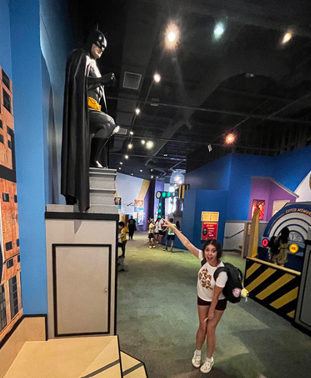

On July 26th, we went to the Strong Museum of Play for a field
trip. Our field trip began with an activity surrounding artifacts
and trying to create an exhibit with the artifacts.
My artifact was about the first Barbie CD-ROM game on PC in the
90s. This game pioneered the beginning of women in gaming and
many companies realized this was an untapped market. Video games
marketed towards girls were never even thought about before this.
The exhibit my group and I ended up creating had the theme of
gender inequality and discrimination. The other artifacts were
about a settlement for unequal treatment at Riot Games, a
magazine that accidentally depicted the man dominated field of
gaming, and a game created by a trans woman highlighting the
challenges of queer people.
My favorite moment was when we went to the mini Wegmans. I've been
to this museum a few times before with my dad and uncle, and
every time we would go out to Rochester, I would always ask to
go back to the museum, but we never had time. Eventually, I grew
out of asking as I became too old to go back. I was delighted to
get the opportunity to go back because one of the main things I
remember is the mini Wegmans. I think it looked a lot different
now from 10 years ago.

Favorite Robot Questions
Mary Schwedatschenko / July 25th, 2023
What is your most or least favorite robot or AI character from any kind of media?
My favorite robot character from media is C3PO from the Star Wars franchise.
Why is it your favorite?
C3PO is my favorite robot because even though he’s not a human, he is really friendly and charismatic.
In what ways do you think your connection to that character influences how you think and feel about robots/AI?
I think my liking to C3PO helps influence my attitude towards robots.
I’m not really scared of robots, and I believe it’s in part to growing up watching Star Wars movies and seeing C3PO and R2-D2.
Did that change at all when you got to meet the robot?
No, not really. I am extremely fascinated by robots and seeing the RoboThespian was super cool to me.
Or when you got to interact with the Midjourney AI?
No, I have always thought AI programs like Midjourney, DALL-E and ChatGPT are really cool.
How could you be more careful in thinking about robots/AI in the future, to be less ‘lazy’ as we talked about in class?
Despite my extreme fascination with robots, I don’t want them to run my household and my life.
I think I learned from Wall-E that humans will basically just turn into sacks of meat if we let robots run everything.
The Perfect PB&J Infographic
Mary Schwedatschenko / July 24th, 2023
In class today, I made an infographic using Canva, a free
software.
It is about how to make the perfect peanut butter
and jelly sandwich by citing chefs and nutritionists.